Chapter 5 관계와 예측
이 장에서는 데이터 과학의 핵심 주제인 변수 간의 관계 와 예측 에 대해 살펴봅니다.
앞서 말씀드렸듯이, 데이터 과학의 궁극적인 목표 중 하나는 미래를 예측하는 것입니다. 따라서 예측 모형을 구축하기 전에 여러 변수들 사이의 관계를 시각화하고 수치적으로 분석하는 방법을 먼저 익히는 것이 중요합니다.
이 장에서는 다음과 같은 내용을 다룹니다.
- 여러 변수 간의 관계를 파악하는 기본적인 시각화 및 수치적 분석 방법
- 가장 기초적인 예측 모형인 단순 선형 회귀모형
- 단순 회귀모형을 바탕으로 한 예측의 기본 개념과 해석 방법
5.1 두 변수의 관계
데이터 과학의 가장 중요한 주제는 예측(prediction) 입니다. 데이터 과학에서는 관심 있는 반응변수(response variable) 의 값이 설명변수(explanatory variable, feature) 의 변화에 따라 어떻게 달라지는지를 파악하고, 이러한 관계를 추정하여 예측을 수행합니다.
두 변수가 상관관계(correlation) 를 가진다는 것은, 주어진 데이터에서 한 변수의 변화를 다른 변수의 변화로 어느 정도 설명할 수 있다는 의미입니다.
주의: 상관관계 ≠ 인과관계
상관관계가 존재하더라도 두 변수가 서로 직접적인 영향을 미치는 인과관계(causal relation) 가 아닐 수 있습니다. 예를 들어 아이스크림 판매량과 에어컨 판매량은 통계적으로 유의한 관계를 보이지만, 이는 제3의 변수인 기온 이 두 변수 모두에 영향을 미치기 때문입니다. 이렇게 인과관계를 왜곡하는 제3의 변수를 잠재변수(confounding variable) 라고 합니다.
5.1.1 아버지와 아들의 키
Francis Galton은 영국의 학자로서 1885년에 아버지와 아들의 키 사이의 관계를 데이터에 기반하여 연구하였습니다. Galton의 이러한 경험적 연구는 데이터를 이용한 통계적 관계 분석의 시초로 여겨지고 있습니다.
1078개 관측값으로 이루어진 아버지와 아들의 키 자료를 데이터프레임 father_son 으로 저장하겠습니다.
fheight: 아버지의 키 (단위: inch)sheight: 아들의 키 (단위: inch)
url1 <- "https://uos-bigdata.github.io/bigdata-exercise/_downloads/4480b104e6e159a32c7d5a0b03cf4684/father-and-son.csv"
father_son <- read_csv(url1)## Rows: 1078 Columns: 2
## ── Column specification ─────────────────────────────────────────────────────────────────────────────────────────────────────────────────────
## Delimiter: ","
## dbl (2): fheight, sheight
##
## ℹ Use `spec()` to retrieve the full column specification for this data.
## ℹ Specify the column types or set `show_col_types = FALSE` to quiet this message.## [1] 1078 2## # A tibble: 5 × 2
## fheight sheight
## <dbl> <dbl>
## 1 65.0 59.8
## 2 63.3 63.2
## 3 65.0 63.3
## 4 65.8 62.8
## 5 61.1 64.3이 자료는 단위가 inch 이기 때문에 우리에게 다소 익숙하지 않습니다. 따라서 자료의 단위를 센티미터(cm)로 변환합니다.
\[ 2.54\ \text{cm} = 1.0\ \text{inch} \]
R에서는 dplyr의 mutate() 로 두 열을 한 번에 변환합니다. across() 를 쓰면 더 간결합니다.
## # A tibble: 10 × 2
## fheight sheight
## <dbl> <dbl>
## 1 165. 152.
## 2 161. 161.
## 3 165. 161.
## 4 167. 159.
## 5 155. 163.
## 6 160. 163.
## 7 166. 163.
## 8 164. 163.
## 9 168. 164.
## 10 170. 163.이제 아버지의 키와 아들의 키에 대한 산점도를 그려 관계를 살펴봅니다.
ggplot(father_son, aes(x = fheight, y = sheight)) +
geom_point(alpha = 0.4, color = "steelblue") +
labs(x = "아버지의 키 (cm)", y = "아들의 키 (cm)") +
theme_minimal()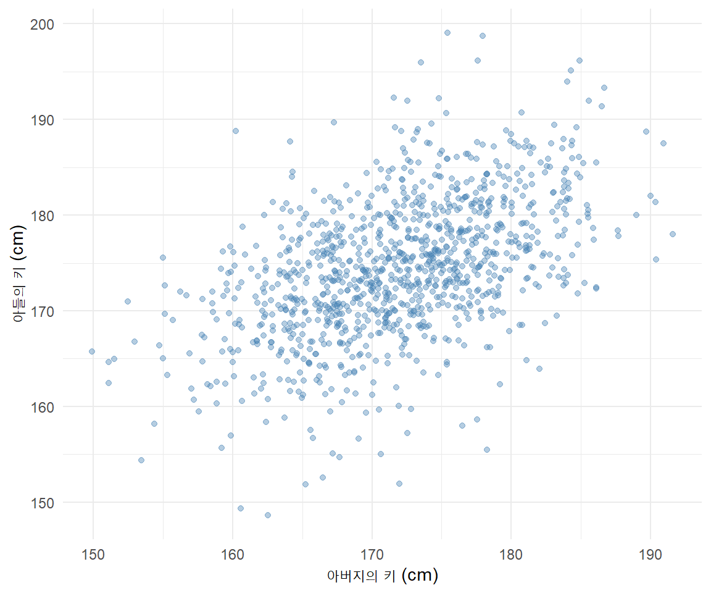
Figure 5.1: 아버지와 아들의 키 산점도
산점도에서 아버지의 키가 증가하면 아들의 키도 증가하는 경향(trend) 이 나타납니다. 그러나 아버지의 키가 크다고 해서 아들의 키가 반드시 큰 것은 아니며, 반대의 경우도 마찬가지입니다.
관계를 좀 더 시각적으로 분명하게 보기 위해, 두 변수의 평균값을 산점도에 함께 표시해 보겠습니다. Python의 plt.axvline(), plt.axhline() 에 해당하는 것이 ggplot2의 geom_vline(), geom_hline() 입니다.
## fheight sheight
## Min. :149.9 Min. :148.6
## 1st Qu.:167.1 1st Qu.:170.0
## Median :172.1 Median :174.3
## Mean :171.9 Mean :174.5
## 3rd Qu.:176.8 3rd Qu.:179.0
## Max. :191.6 Max. :199.0ggplot(father_son, aes(x = fheight, y = sheight)) +
geom_point(alpha = 0.4, color = "steelblue") +
geom_vline(xintercept = mean(father_son$fheight), color = "red") +
geom_hline(yintercept = mean(father_son$sheight), color = "red") +
labs(x = "아버지의 키 (cm)", y = "아들의 키 (cm)") +
theme_minimal()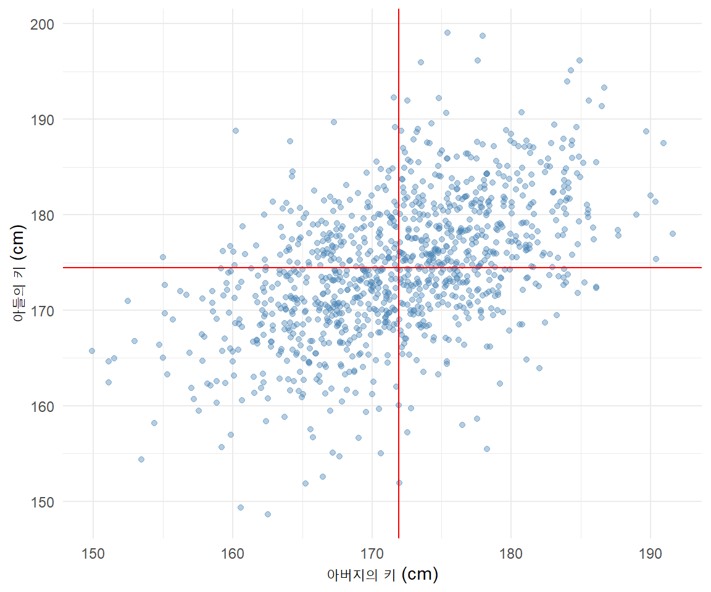
Figure 5.2: 평균선을 함께 표시한 산점도
아버지의 키가 평균보다 크더라도 아들의 키가 전체 아들 평균보다 작은 경우가 있고, 그 반대의 경우도 존재합니다. 그럼에도 불구하고 두 변수는 완벽한 관계는 아니지만 전체적으로 비례적인 경향 을 보이고 있습니다.
5.1.2 상관계수
두 변수의 선형적 비례 관계(linear relation) 를 수치적으로 나타내는 측도가 상관계수(correlation coefficient, \(r\)) 입니다.
두 변수 \(x\), \(y\) 에 대해 \(n\)개의 자료 \((x_1, y_1), \ldots, (x_n, y_n)\) 가 있을 때, 평균과 표준편차는 다음과 같습니다.
\[ \bar{x} = \frac{1}{n}\sum_{i=1}^n x_i, \qquad SD_x = \sqrt{\frac{\sum_{i=1}^n (x_i - \bar{x})^2}{n-1}} \]
상관계수 \(r\) 은 다음과 같이 계산합니다.
\[ r = \frac{\sum_{i=1}^n (x_i - \bar{x})(y_i - \bar{y})}{(n-1)\, SD_x\, SD_y} \]
상관계수 \(r\) 의 성질은 다음과 같습니다.
- \(r\) 은 \(-1\) 과 \(1\) 사이의 값을 가집니다.
- \(r = 1\) 이면 두 변수는 완벽한 양의 선형 비례관계가 있습니다.
- \(r = -1\) 이면 두 변수는 완벽한 음의 선형 비례관계가 있습니다.
- \(r = 0\) 이면 두 변수는 선형 관계가 없다 고 말할 수 있습니다.
- \(|r|\) 이 클수록 선형 관계의 강도가 큽니다.
주의할 점은 \(r\) 은 선형관계 의 강도를 측정하는 값이므로, 비선형적 관계는 제대로 반영하지 못한다는 것입니다.
R에서 상관계수는 base R의 cor() 함수로 구합니다 (pandas의 .corr() 에 대응). 두 벡터를 주면 값 하나를, 데이터프레임을 주면 상관행렬을 반환합니다.
## [1] 0.5013383## fheight sheight
## fheight 1.0000000 0.5013383
## sheight 0.5013383 1.0000000Galton의 자료에서 상관계수가 약 0.50 으로 나타납니다. 이는 두 변수 사이에 어느 정도 양의 선형 관계가 존재한다고 볼 수 있습니다.
5.1.3 모의실험: 상관계수와 산점도
상관계수의 값과 두 변수의 관계를 좀 더 이해하기 위해 모의실험으로 자료를 만들어 보겠습니다.
두 확률변수 \(x\), \(y\) 가 각각 표준정규분포 \(N(0,1)\) 을 따르고 상관계수가 \(r\) 인 이변량 정규분포(bivariate normal distribution) 에서 난수를 생성합니다. Python의 np.random.multivariate_normal() 에 해당하는 R 함수는 MASS 패키지의 mvrnorm() 입니다.
##
## 다음의 패키지를 부착합니다: 'MASS'## The following object is masked from 'package:dplyr':
##
## select# 상관계수 r 값에 -1 과 1 사이의 값을 지정
r <- 0.5
mu <- c(0, 0)
Sigma <- matrix(c(1, r,
r, 1), nrow = 2)
set.seed(2018)
sim <- mvrnorm(n = 1078, mu = mu, Sigma = Sigma)
sim_df <- data.frame(x = sim[, 1], y = sim[, 2])
head(sim_df, 5)## x y
## 1 -0.6752089 -0.05742080
## 2 -1.6011384 -1.08332930
## 3 -0.5420323 0.43043746
## 4 0.3847807 0.08439954
## 5 1.6363246 1.36927491ggplot(sim_df, aes(x = x, y = y)) +
geom_point(alpha = 0.4, color = "steelblue") +
labs(title = paste("correlation =", r)) +
theme_minimal()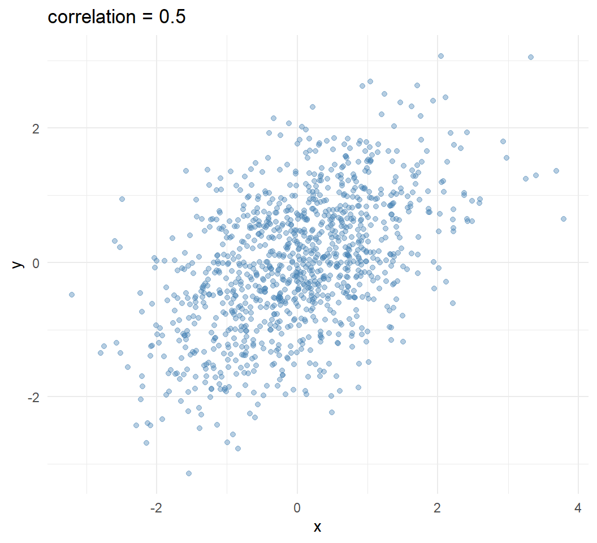
Figure 5.3: 상관계수 r = 0.5 인 모의자료의 산점도
위 코드를 이용하여 상관계수와 데이터 개수를 인자로 받아 데이터프레임을 만들어 주는 함수 를 정의해 보겠습니다. R에서 함수는 function(인자) { ... } 형태로 정의하며, 마지막 표현식이 자동으로 반환됩니다.
random_df_corr <- function(r, N) {
Sigma <- matrix(c(1, r, r, 1), nrow = 2)
sim <- mvrnorm(n = N, mu = c(0, 0), Sigma = Sigma)
data.frame(x = sim[, 1], y = sim[, 2])
}여러 상관계수 값에 대한 산점도를 한 번에 비교해 봅니다. R에서는 여러 데이터프레임을 이어 붙인 뒤 facet_wrap() 으로 나누어 그리면 편리합니다.
set.seed(1)
r_values <- c(-0.8, -0.3, 0, 0.3, 0.6, 0.9)
sim_all <- lapply(r_values, function(rr) {
d <- random_df_corr(rr, 500)
d$r <- paste("r =", rr)
d
}) |> bind_rows()
sim_all$r <- factor(sim_all$r, levels = paste("r =", r_values))
ggplot(sim_all, aes(x = x, y = y)) +
geom_point(alpha = 0.3, size = 0.7, color = "steelblue") +
facet_wrap(~ r) +
theme_minimal()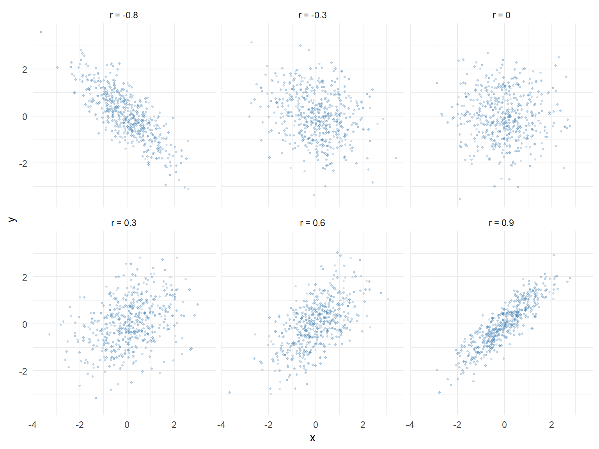
Figure 5.4: 상관계수 값에 따른 산점도 비교
상관계수가 0.5 이상이면 두 변수가 각각 정규분포를 따른다는 가정에서 생성되는 산점도가 아버지와 아들의 키 자료에서 보았던 산점도와 매우 유사한 패턴을 보입니다.
5.1.4 비선형 관계와 상관계수
두 변수가 선형관계가 아닌 특별한 관계를 가지고 있는 경우, 상관계수는 이러한 관계를 제대로 반영하지 못합니다.
예를 들어 \(y = x^2\) 와 같은 이차식 형태의 비선형 관계를 생각해 봅니다.
set.seed(2018)
n <- 500
x <- rnorm(n, mean = 0, sd = 5)
y <- 3.0 * x^2 - 10.0 + rnorm(n, mean = 0, sd = 10)
df_quad <- data.frame(x = x, y = y)
ggplot(df_quad, aes(x = x, y = y)) +
geom_point(alpha = 0.4, color = "tomato") +
theme_minimal()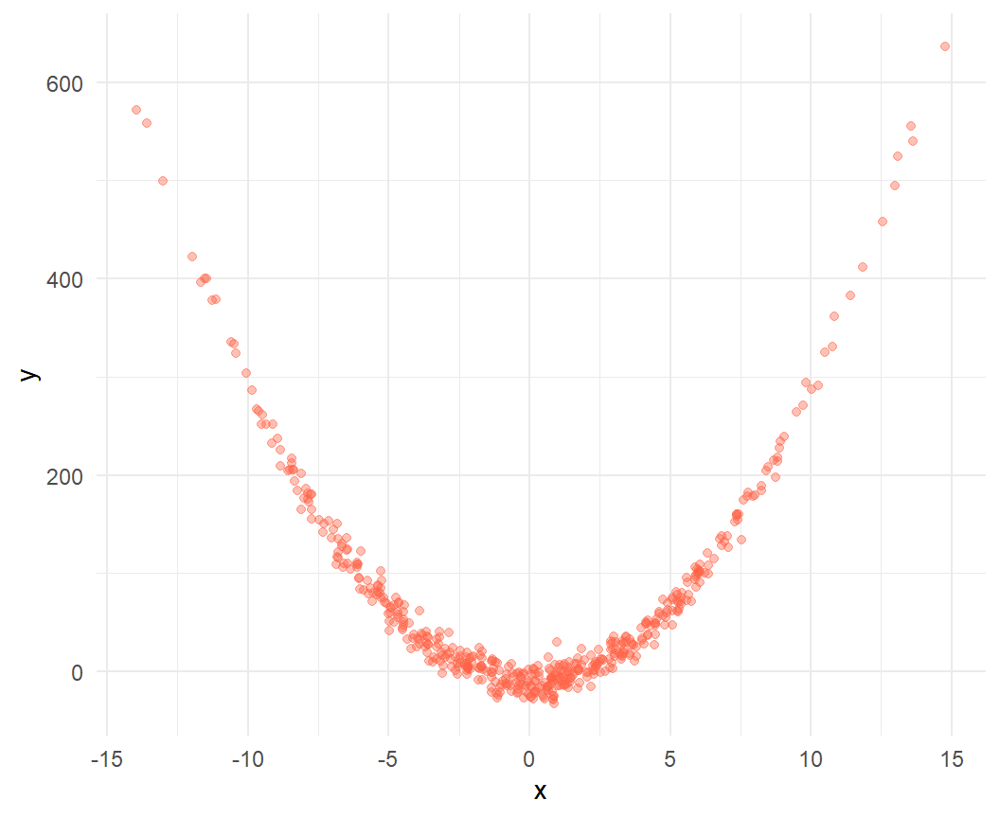
Figure 5.5: 이차 관계를 가진 두 변수의 산점도
## [1] -0.03237714상관계수는 0에 가까운 값을 갖습니다. 즉, 상관계수가 0이라는 것은 두 변수 사이에 선형관계가 없다는 의미일 뿐, 아무런 관계도 존재하지 않는다는 뜻은 아닙니다.
5.1.5 변수의 표준화
앞서 주어진 상관계수 \(r\) 의 계산식은 다음과 같이 나타낼 수도 있습니다.
\[ r = \frac{1}{n-1} \sum_{i=1}^n \left( \frac{x_i - \bar{x}}{SD_x} \right) \left( \frac{y_i - \bar{y}}{SD_y} \right) = \frac{1}{n-1} \sum_{i=1}^n z_i w_i \]
각 관측값에서 평균을 빼고 표준편차로 나누는 작업을 표준화(standardization) 라고 합니다.
\[ z_i = \frac{x_i - \bar{x}}{SD_x}, \qquad w_i = \frac{y_i - \bar{y}}{SD_y} \]
표준화된 자료는 평균이 0, 표준편차가 1이 됩니다.
\[ \bar{z} = \bar{w} = 0, \qquad SD_z = SD_w = 1 \]
데이터를 표준화하는 작업은 데이터과학에서 매우 자주 사용됩니다. 여러 변수가 서로 다른 단위를 가지고 있으면 직접 비교하기 어렵고 예측 모형의 성능에도 영향을 주기 때문입니다. 참고로 상관계수는 단위에 영향을 받지 않으므로 표준화 전후가 언제나 동일 합니다.
R에는 표준화를 수행하는 scale() 함수가 base에 내장되어 있습니다. 직접 함수를 정의할 수도 있습니다.
## [1] -1.3363062 -0.8017837 -0.2672612 0.2672612 0.8017837 1.3363062## [1] -1.3363062 -0.8017837 -0.2672612 0.2672612 0.8017837 1.3363062데이터프레임의 모든 열을 표준화할 때는 dplyr의 across() 를 사용합니다 (pandas의 df.apply(standardize, axis=0) 에 대응).
## # A tibble: 5 × 2
## fheight sheight
## <dbl> <dbl>
## 1 -0.961 -3.16
## 2 -1.62 -1.94
## 3 -0.995 -1.90
## 4 -0.705 -2.09
## 5 -2.39 -1.56## fheight sheight
## Min. :-3.16194 Min. :-3.61565
## 1st Qu.:-0.69197 1st Qu.:-0.62274
## Median : 0.02896 Median :-0.02425
## Mean : 0.00000 Mean : 0.00000
## 3rd Qu.: 0.69799 3rd Qu.: 0.63307
## Max. : 2.82230 Max. : 3.43934## fheight sheight
## 1 1## fheight sheight
## fheight 1.0000000 0.5013383
## sheight 0.5013383 1.0000000ggplot(father_son_st, aes(x = fheight, y = sheight)) +
geom_point(alpha = 0.4, color = "steelblue") +
labs(x = "표준화된 아버지의 키", y = "표준화된 아들의 키") +
theme_minimal()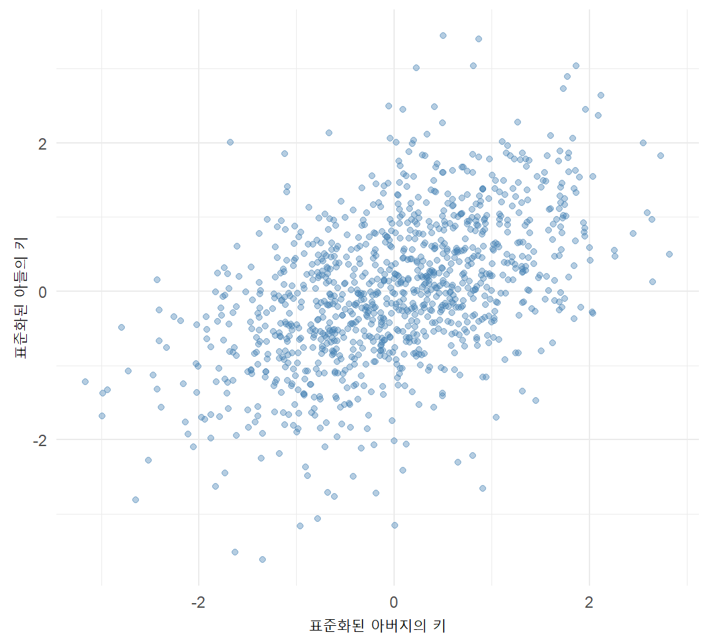
Figure 5.6: 표준화된 자료의 산점도
5.1.6 예제: 키와 몸무게의 관계
국민체력100에서 얻은 체력측정 데이터에서 키와 몸무게의 관계를 살펴봅니다.
url2 <- "https://raw.githubusercontent.com/minstat/edu/main/physical_test_2018_data.csv"
physical_data <- read_csv(url2)## Rows: 1874 Columns: 18
## ── Column specification ─────────────────────────────────────────────────────────────────────────────────────────────────────────────────────
## Delimiter: ","
## chr (4): CENTER_NM, CERT_GBN, AGE_GBN, TEST_GEN
## dbl (14): TEST_AGE, ITEM_F001, ITEM_F002, ITEM_F003, ITEM_F004, ITEM_F005, ITEM_F006, ITEM_F007, ITEM_F008, ITEM_F012, ITEM_F018, ITEM_F0...
##
## ℹ Use `spec()` to retrieve the full column specification for this data.
## ℹ Specify the column types or set `show_col_types = FALSE` to quiet this message.physical_01 <- physical_data |>
dplyr::select(gender = TEST_GEN,
age = TEST_AGE,
height = ITEM_F001,
weight = ITEM_F002)
head(physical_01, 5)## # A tibble: 5 × 4
## gender age height weight
## <chr> <dbl> <dbl> <dbl>
## 1 M 33 159. 57.2
## 2 F 48 156. 52.9
## 3 M 22 175. 96.2
## 4 M 29 179. 79.4
## 5 F 31 160. 50.219세 이상 성인 남자 의 키와 몸무게 관계를 산점도로 그리고 상관계수를 구합니다.
physical_M <- physical_01 |> filter(gender == "M", age >= 19)
ggplot(physical_M, aes(x = height, y = weight)) +
geom_point(alpha = 0.5, color = "steelblue") +
labs(x = "키 (cm)", y = "몸무게 (kg)") +
theme_minimal()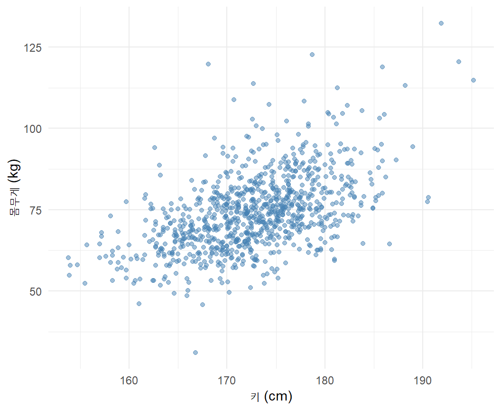
Figure 5.7: 성인 남자의 키와 몸무게
## [1] 0.523844619세 이상 성인 여자 에 대해서도 같은 분석을 수행합니다.
physical_F <- physical_01 |> filter(gender == "F", age >= 19)
ggplot(physical_F, aes(x = height, y = weight)) +
geom_point(alpha = 0.5, color = "tomato") +
labs(x = "키 (cm)", y = "몸무게 (kg)") +
theme_minimal()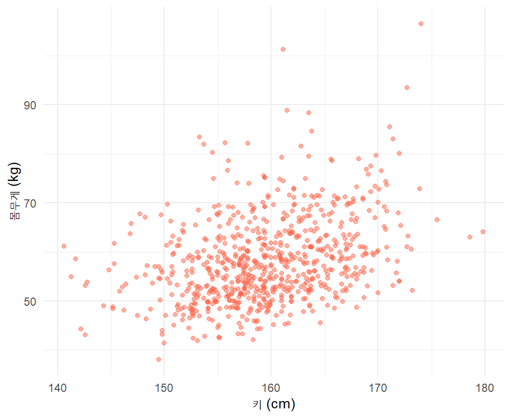
Figure 5.8: 성인 여자의 키와 몸무게
## [1] 0.3535921남자의 상관계수가 여자보다 다소 높게 나타납니다. 다만 주의할 점은 이러한 결과가 우리나라 전체 남녀의 일반적인 관계를 나타내는 것은 아닐 수 있다는 것입니다. 국민체력100 데이터가 확률표본이 아니기 때문 입니다.
성별을 나누지 않은 하나의 데이터프레임에서 그룹별 상관계수 를 한 번에 구할 수도 있습니다. Python의 groupby().corr() 에 해당하는 작업을 dplyr에서는 group_by() + summarise() 로 간결하게 처리합니다.
physical_01 |>
filter(age >= 19) |>
group_by(gender) |>
summarise(correlation = cor(height, weight),
n = n())## # A tibble: 2 × 3
## gender correlation n
## <chr> <dbl> <int>
## 1 F 0.354 720
## 2 M 0.524 920성별에 따라 색을 구분한 산점도로 두 집단을 함께 볼 수도 있습니다.
physical_01 |>
filter(age >= 19) |>
ggplot(aes(x = height, y = weight, color = gender)) +
geom_point(alpha = 0.4) +
labs(x = "키 (cm)", y = "몸무게 (kg)", color = "성별") +
theme_minimal()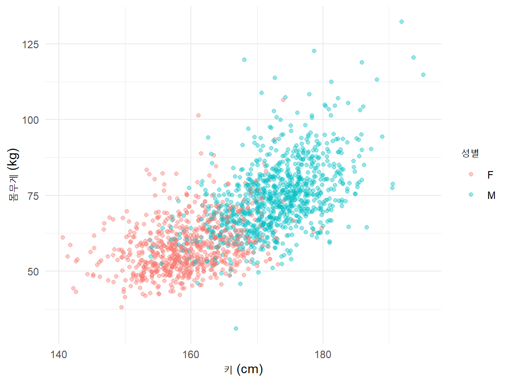
Figure 5.9: 성별로 구분한 키와 몸무게
5.2 선형 회귀모형
관심 있는 반응변수와 설명변수의 함수적 관계를 추론할 때 사용할 수 있는 가장 단순하고 기본적인 모형이 선형 회귀모형(linear regression model) 입니다.
5.2.1 아버지와 아들의 키: 평균들의 관계
앞 절에서 살펴본 Galton의 데이터에서 아버지의 키가 증가하면 아들의 키가 증가하는 경향 을 보았습니다.
여기서 “경향(trend)”이라는 말에 주의해야 합니다. 경향을 보인다는 것은 아버지의 키를 알고 있다고 해서 아들의 키를 정확하게 예측할 수 있다는 뜻이 아니라, 아버지의 키가 증가하면 평균적으로 아들의 키도 증가하는 경향이 있다는 의미입니다.
그렇다면 이러한 “경향”을 통계적으로 어떻게 구체적으로 나타낼 수 있을까요? 아버지의 키를 몇 개의 구간으로 나누어 생각해 보겠습니다.
- 그룹 1: 140 < 아버지의 키 ≤ 160
- 그룹 2: 160 < 아버지의 키 ≤ 170
- 그룹 3: 170 < 아버지의 키 ≤ 180
- 그룹 4: 180 < 아버지의 키 ≤ 200
Python pandas의 pd.cut() 에 해당하는 R 함수는 base R의 cut() 입니다. 기본적으로 (a, b] 형태의 구간(왼쪽 열림, 오른쪽 닫힘)으로 나누어 주며, 이는 pandas의 include_lowest = False 와 동일한 동작입니다.
father_son <- father_son |>
mutate(group1 = cut(fheight, breaks = c(140, 160, 170, 180, 200)))
head(father_son, 3)## # A tibble: 3 × 3
## fheight sheight group1
## <dbl> <dbl> <fct>
## 1 165. 152. (160,170]
## 2 161. 161. (160,170]
## 3 165. 161. (160,170]## [1] "(140,160]" "(160,170]" "(170,180]" "(180,200]"##
## (140,160] (160,170] (170,180] (180,200]
## 48 372 521 137각 그룹의 아버지 키 평균과 아들 키 평균을 계산해 봅니다.
group_summary_1 <- father_son |>
group_by(group1) |>
summarise(fheight = mean(fheight),
sheight = mean(sheight),
n = n())
group_summary_1## # A tibble: 4 × 4
## group1 fheight sheight n
## <fct> <dbl> <dbl> <int>
## 1 (140,160] 157. 167. 48
## 2 (160,170] 166. 171. 372
## 3 (170,180] 175. 176. 521
## 4 (180,200] 183. 180. 137ggplot(group_summary_1, aes(x = fheight, y = sheight)) +
geom_point(color = "red", size = 3) +
labs(x = "아버지 키의 그룹 평균 (cm)", y = "아들 키의 그룹 평균 (cm)") +
theme_minimal()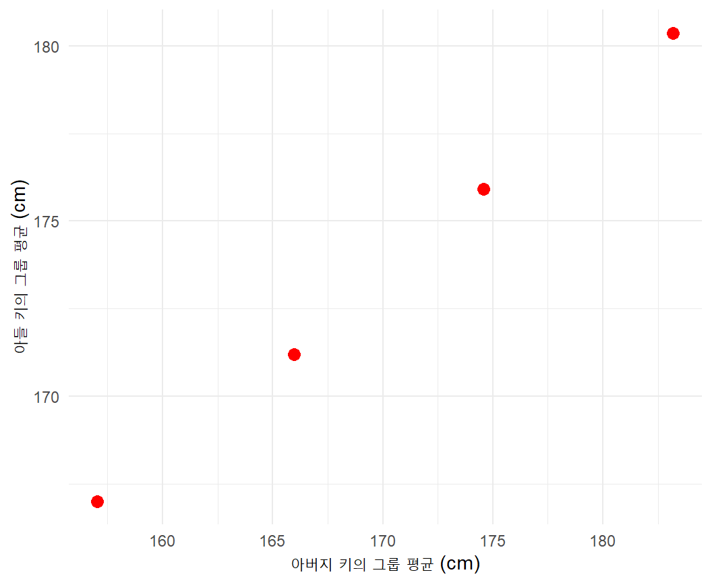
Figure 5.10: 4개 구간의 그룹별 평균
아버지의 키 평균이 증가할수록 아들의 키 평균도 함께 증가하며, 네 개의 그룹별 평균값이 마치 하나의 직선 위에 놓여 있는 것처럼 보입니다. 전체 산점도에서는 다소 불확실하게 보였던 경향이, 그룹별 평균으로 요약하니 훨씬 명확한 형태로 나타납니다.
이번에는 구간을 더 잘게 나누어 봅니다. cut() 의 breaks 에 정수 하나를 주면 같은 길이의 구간 으로 자동 분할합니다 (pandas의 bins = 10 에 대응).
father_son <- father_son |>
mutate(group2 = cut(fheight, breaks = 10))
group_summary_2 <- father_son |>
group_by(group2) |>
summarise(fheight = mean(fheight),
sheight = mean(sheight),
n = n())
group_summary_2## # A tibble: 10 × 4
## group2 fheight sheight n
## <fct> <dbl> <dbl> <int>
## 1 (150,154] 152. 164. 7
## 2 (154,158] 156. 167. 19
## 3 (158,162] 161. 169. 68
## 4 (162,167] 165. 171. 148
## 5 (167,171] 169. 172. 219
## 6 (171,175] 173. 175. 249
## 7 (175,179] 177. 177. 205
## 8 (179,183] 181. 179. 99
## 9 (183,187] 185. 182. 55
## 10 (187,192] 190. 181. 9ggplot(group_summary_2, aes(x = fheight, y = sheight)) +
geom_point(color = "red", size = 3) +
labs(x = "아버지 키의 그룹 평균 (cm)", y = "아들 키의 그룹 평균 (cm)") +
theme_minimal()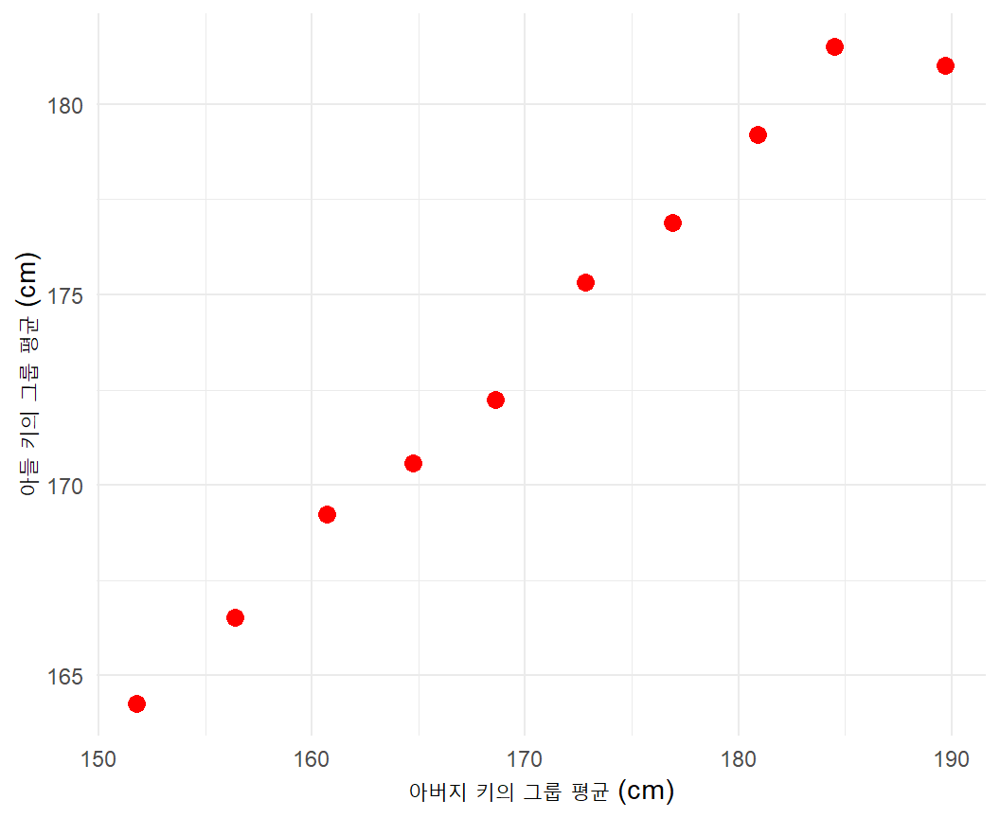
Figure 5.11: 10개 구간의 그룹별 평균
10개 구간의 평균들도 하나의 직선과 같은 형태를 보입니다. 각 구간에 대한 아버지와 아들의 키 평균은 매우 단순한 일차식으로 나타낼 수 있습니다.
\[ \text{mean of son's heights} \approx \beta_0 + \beta_1 (\text{mean of father's heights}) \]
이제 구간별 평균을 전체 자료의 산점도와 함께 표시해 봅니다.
ggplot(father_son, aes(x = fheight, y = sheight)) +
geom_point(alpha = 0.3, color = "steelblue") +
geom_point(data = group_summary_2, color = "red", size = 3.5) +
labs(x = "아버지의 키 (cm)", y = "아들의 키 (cm)") +
theme_minimal()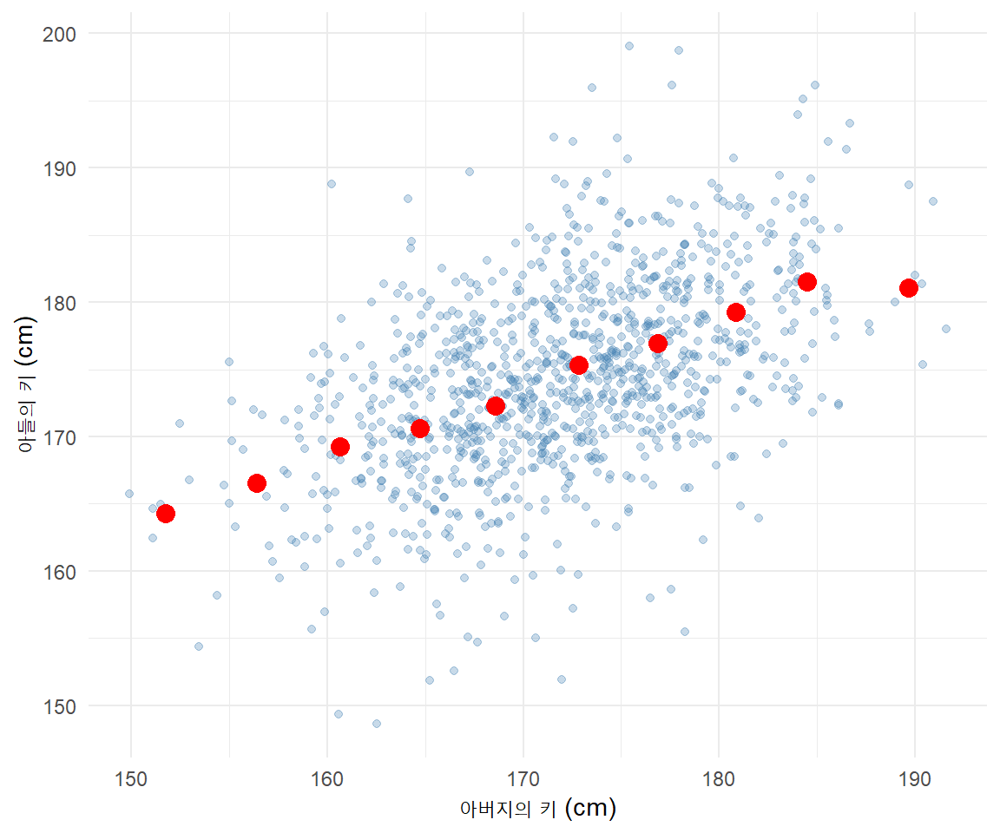
Figure 5.12: 전체 산점도와 그룹별 평균(빨간 점)
빨간 점들은 주어진 아버지 키 구간에서 아들 키의 평균값입니다. 두 평균이 직선과 같은 관계를 가진다는 것을 확인할 수 있습니다.
선형 회귀모형 은 반응변수 \(y\) 의 평균 이 설명변수 \(x\) 의 값에 따라 직선으로 변하는 것을 나타내는 모형입니다.
\[ E(y \mid x) = \beta_0 + \beta_1 x \]
여기서 \(E(y \mid x)\) 는 설명변수 \(x\) 의 값이 주어졌을 때 반응변수 \(y\) 의 평균(Expectation, Mean)을 의미합니다.
5.2.2 최소제곱법
5.2.2.1 최소제곱법의 기준
선형 회귀모형에서 직선의 기울기 \(\beta_1\) 과 절편 \(\beta_0\) 을 데이터를 이용하여 결정하는 기준과 방법을 알아봅니다.
최소제곱법(least squares method) 은 설명변수의 값 \(x_i\) 에 대하여 실제 관측한 반응변수의 값 \(y_i\) 와 회귀직선 위의 값 \(\beta_0 + \beta_1 x_i\) 가 가장 가깝게 나타나도록 \(\beta_0\), \(\beta_1\) 을 결정하는 방법입니다.
\[ \min_{\beta_0,\, \beta_1} \; \frac{1}{n} \sum_{i=1}^n \bigl(y_i - [\beta_0 + \beta_1 x_i]\bigr)^2 \]
여기서 관측값과 직선 위의 값의 차이를 오차(error) 라고 부릅니다.
\[ \text{error}_i = y_i - (\beta_0 + \beta_1 x_i) = y_i - E(y_i \mid x_i) \]
5.2.2.2 평균제곱오차
절편과 기울기가 주어졌을 때 오차들을 제곱하여 평균한 값을 평균제곱오차(Mean Squared Error, MSE) 라고 합니다.
\[ mse(\beta_0, \beta_1) = \frac{1}{n} \sum_{i=1}^n \bigl(y_i - [\beta_0 + \beta_1 x_i]\bigr)^2 = \frac{1}{n} \sum_{i=1}^n \text{error}_i^2 \]
절편과 기울기가 주어진 경우, 회귀직선과 오차를 그림으로 나타내고 평균제곱오차를 계산해 주는 함수 least_squares_error() 를 정의해 봅니다. R에서는 ggplot 객체를 함수 안에서 만들어 print() 로 출력하고, MSE 값을 반환하도록 작성합니다.
least_squares_error <- function(df, x_name, y_name,
intercept, slope,
percent_point_errors = 0.02) {
# 목적: 주어진 절편과 기울기로 회귀직선을 그리고 평균제곱오차(mse)를 계산
# df : 데이터프레임
# x_name : 설명변수의 열 이름 (문자열)
# y_name : 반응변수의 열 이름 (문자열)
# percent_point_errors : 오차(빨간 선)를 표시할 데이터의 비율
x <- df[[x_name]]
y <- df[[y_name]]
n <- length(x)
# 예측값과 오차
y_hat <- intercept + slope * x
mse <- mean((y - y_hat)^2)
# 오차를 표시할 점을 임의로 선택
set.seed(1)
show <- rbinom(n, size = 1, prob = percent_point_errors) == 1
seg <- data.frame(x = x[show], y = y[show], yend = y_hat[show])
p <- ggplot(df, aes(x = .data[[x_name]], y = .data[[y_name]])) +
geom_point(alpha = 0.3, color = "steelblue") +
geom_segment(data = seg,
aes(x = x, xend = x, y = y, yend = yend),
color = "red", linewidth = 0.8,
inherit.aes = FALSE) +
geom_abline(intercept = intercept, slope = slope,
color = "blue", linewidth = 1) +
labs(title = sprintf("intercept = %.2f, slope = %.2f, mse = %.2f",
intercept, slope, mse)) +
theme_minimal()
print(p)
mse
}절편 \(\beta_0 = 20.0\), 기울기 \(\beta_1 = 0.8\) 인 경우입니다.
\[ E(y \mid x) = 20.0 + 0.8x, \qquad \text{error}_i = y_i - [20.0 + 0.8 x_i] \]
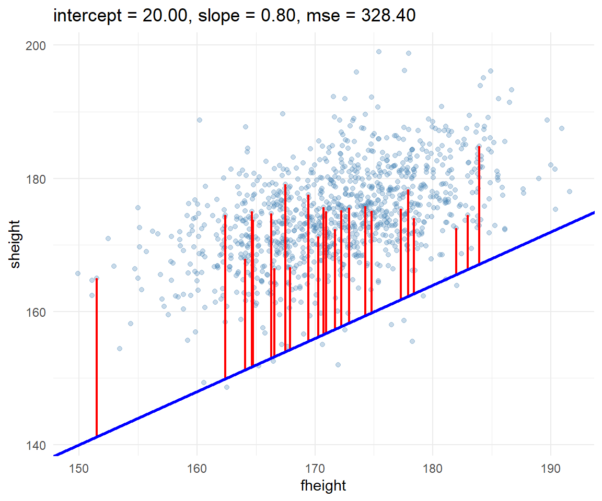
Figure 5.13: 절편 20.0, 기울기 0.8 인 직선과 오차
## [1] 328.3975이번에는 절편 \(\beta_0 = 25.0\), 기울기 \(\beta_1 = 0.9\) 인 경우입니다.
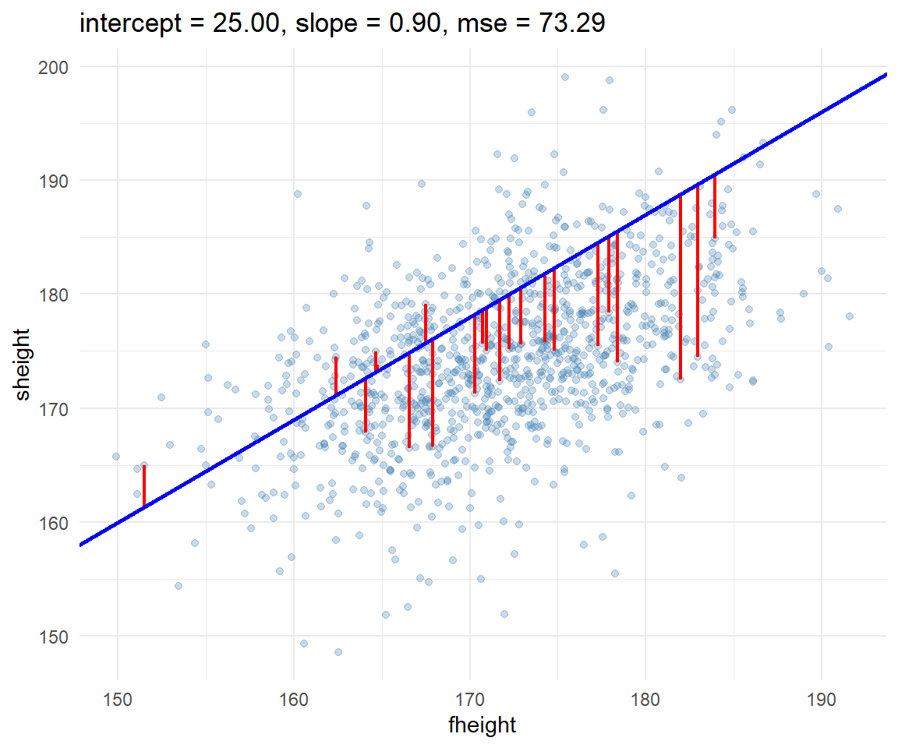
Figure 5.14: 절편 25.0, 기울기 0.9 인 직선과 오차
## [1] 73.29044절편과 기울기가 달라지면 평균제곱오차의 크기도 함께 변합니다. 두 번째 직선의 MSE가 훨씬 작으므로, 데이터를 더 잘 설명하는 직선이라 할 수 있습니다.
5.2.3 최소제곱법의 해
그렇다면 평균제곱오차를 최소화하는 최적의 절편과 기울기는 어떻게 구할까요?
5.2.3.1 미분을 이용한 유도
제곱오차합(SSE)을 최소화해도 동일한 해를 얻습니다.
\[ S(\beta_0, \beta_1) = \sum_{i=1}^n (y_i - \beta_0 - \beta_1 x_i)^2 \]
절편 \(\beta_0\) 에 대한 편미분:
\[ \frac{\partial S}{\partial \beta_0} = -2 \sum_{i=1}^n (y_i - \beta_0 - \beta_1 x_i) = 0 \]
이를 정리하면 \(\sum y_i = n\beta_0 + \beta_1 \sum x_i\) 이고, 양변을 \(n\) 으로 나누면
\[ \bar{y} = \beta_0 + \beta_1 \bar{x} \quad \Longrightarrow \quad \beta_0 = \bar{y} - \beta_1 \bar{x} \]
기울기 \(\beta_1\) 에 대한 편미분:
\[ \frac{\partial S}{\partial \beta_1} = -2 \sum_{i=1}^n x_i (y_i - \beta_0 - \beta_1 x_i) = 0 \]
여기에 \(\beta_0 = \bar{y} - \beta_1 \bar{x}\) 를 대입하여 정리하면 다음을 얻습니다.
\[ \hat{\beta}_1 = \frac{\sum_{i=1}^n (x_i - \bar{x})(y_i - \bar{y})} {\sum_{i=1}^n (x_i - \bar{x})^2}, \qquad \hat{\beta}_0 = \bar{y} - \hat{\beta}_1 \bar{x} \]
이 해는 상관계수와 표준편차를 이용하여 다음과 같이 간결하게 표현할 수도 있습니다.
\[ \hat{\beta}_1 = r \frac{SD_y}{SD_x}, \qquad \hat{\beta}_0 = \bar{y} - \hat{\beta}_1 \bar{x} \]
이 공식을 이용하여 최소제곱 해를 구하는 함수 least_squares_fit() 을 정의합니다.
least_squares_fit <- function(df, x_name, y_name) {
# 목적: 주어진 자료로 최소제곱 절편과 기울기를 계산
# 반환: 이름 있는 벡터 c(b0 = 절편, b1 = 기울기)
x <- df[[x_name]]
y <- df[[y_name]]
r <- cor(x, y)
SD_x <- sd(x)
SD_y <- sd(y)
b1 <- r * SD_y / SD_x
b0 <- mean(y) - b1 * mean(x)
c(b0 = b0, b1 = b1)
}## b0 b1
## 86.071975 0.514093기울기의 추정량은 약 \(\hat{\beta}_1 = 0.514\) 로 상관계수(약 0.501)와 매우 유사합니다. 아버지와 아들 키의 표준편차가 거의 동일하기 때문에 \(\hat{\beta}_1 = r \cdot SD_y / SD_x \approx r\) 이 되는 것입니다.
이제 최소제곱 추정량에서의 평균제곱오차를 구해 봅니다.
mse_best <- least_squares_error(father_son, "fheight", "sheight",
intercept = beta["b0"],
slope = beta["b1"],
percent_point_errors = 0.03)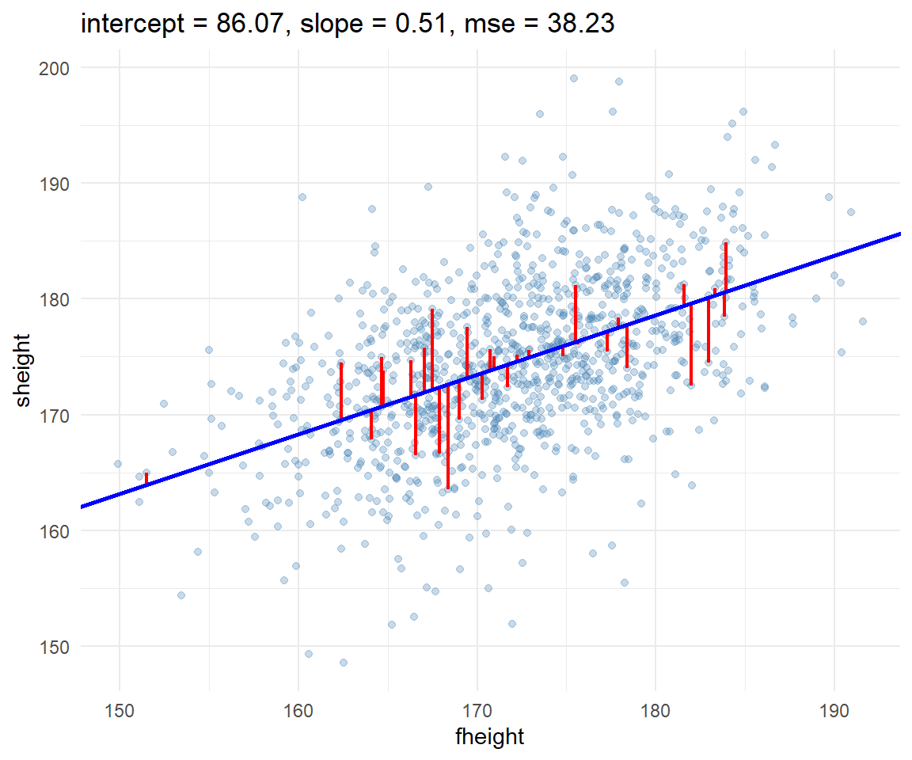
Figure 5.15: 최소제곱 회귀직선과 오차
## [1] 38.23082이 값은 모든 절편·기울기 조합에 대한 최소값 입니다. 즉, 다른 어떤 값을 넣어도 평균제곱오차는 이보다 커집니다. 앞서 계산한 mse_1, mse_2 와 비교해 보세요.
## mse_1 mse_2 mse_best
## 328.39745 73.29044 38.23082추정된 회귀직선은 다음과 같습니다.
\[ E(y \mid x) = 86.07 + 0.51x \]
이는 아버지의 키가 1cm 증가하면 아들의 키 평균이 약 0.51cm 증가한다 는 의미입니다.
이 식으로 예측을 할 수 있습니다. 예를 들어 아버지의 키가 185.0cm 인 경우 아들의 평균적인 키는 다음과 같이 예측됩니다.
## b0
## 181.1792유의할 점: 주어진 아버지 키에 대한 예측값은 아들의 평균적인 키 에 대한 예측값입니다. 실제 관측값들은 이 직선을 중심으로 퍼져 있습니다.
ggplot2 에서는 geom_smooth(method = "lm") 으로 회귀직선과 신뢰띠를 즉시 그릴 수 있습니다.
ggplot(father_son, aes(x = fheight, y = sheight)) +
geom_point(alpha = 0.3, color = "steelblue") +
geom_smooth(method = "lm", color = "red", fill = "red", alpha = 0.2) +
labs(x = "아버지의 키 (cm)", y = "아들의 키 (cm)") +
theme_minimal()## `geom_smooth()` using formula = 'y ~ x'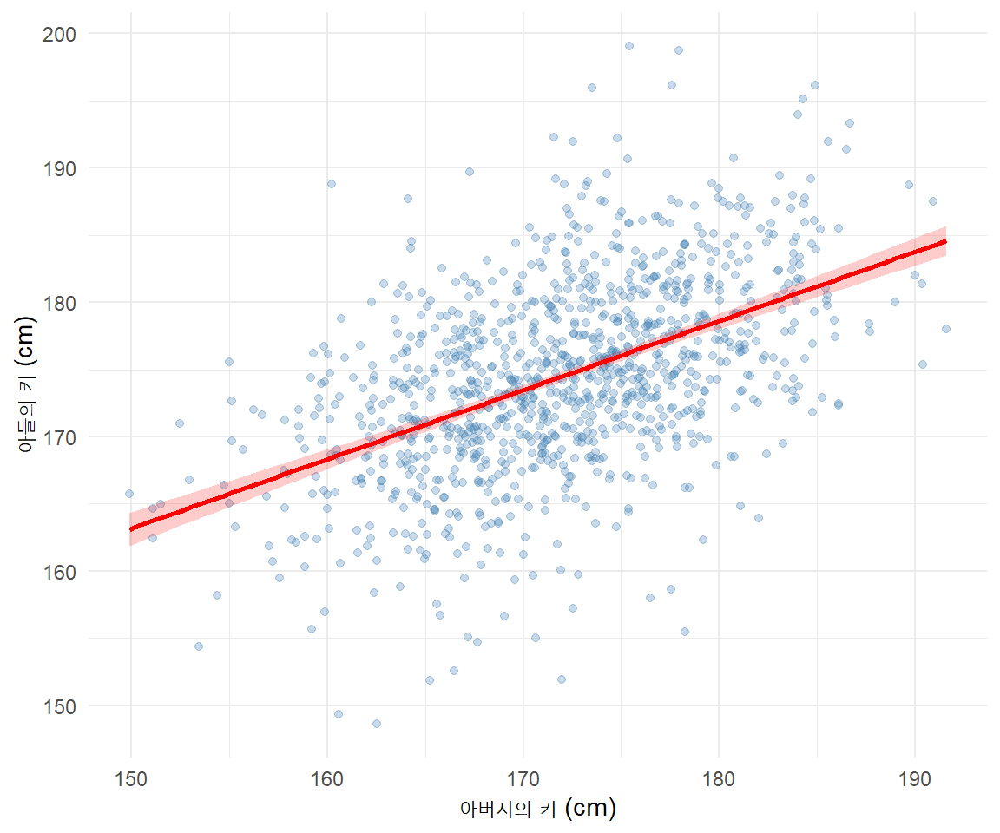
Figure 5.16: 아버지-아들 키의 최소제곱 회귀직선
5.3 선형 회귀모형의 평가
추정된 회귀직선으로부터 관측값들이 퍼진 정도가 작아질수록, 회귀모형이 두 변수의 관계를 더 잘 설명한다고 판단할 수 있습니다.
두 개의 모의 데이터셋을 만들어 비교해 봅니다. 두 자료는 동일한 참 모형 \(y = 1.0 + 1.5x\) 를 따르지만, 오차의 크기가 다릅니다.
set.seed(111121)
n <- 20
# 오차가 큰 경우 (sigma = 5.0)
x1 <- rnorm(n, 0, 1)
y1 <- 1.0 + 1.5 * x1 + rnorm(n, 0, 5.0)
df_reg_1 <- data.frame(x = x1, y = y1, case = "Large errors")
# 오차가 작은 경우 (sigma = 1.0)
x2 <- rnorm(n, 0, 1)
y2 <- 1.0 + 1.5 * x2 + rnorm(n, 0, 1.0)
df_reg_2 <- data.frame(x = x2, y = y2, case = "Small errors")
df_reg <- bind_rows(df_reg_1, df_reg_2)Python seaborn의 FacetGrid + regplot 조합에 해당하는 것이 ggplot2의 facet_wrap() + geom_smooth(method = "lm") 입니다.
ggplot(df_reg, aes(x = x, y = y)) +
geom_point(color = "steelblue") +
geom_smooth(method = "lm", color = "tomato") +
facet_wrap(~ case) +
theme_minimal()## `geom_smooth()` using formula = 'y ~ x'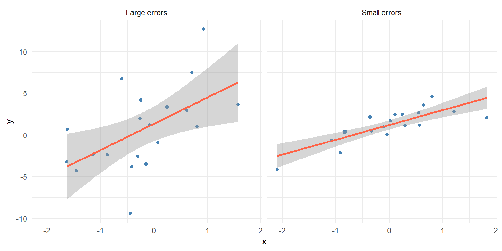
Figure 5.17: 오차 크기에 따른 회귀모형 비교
두 번째 데이터에 적합한 모형이 첫 번째보다 오차가 훨씬 작다는 것을 알 수 있습니다. 따라서 평균제곱오차가 작을수록 관계를 더 잘 설명하는 모형이라고 볼 수 있습니다.
하지만 MSE는 자료의 단위에 따라 값이 변하는 측도 이므로, 단위가 다른 자료끼리는 직접 비교하기 어렵습니다. 이럴 때 단위에 영향받지 않도록 표준화한 측도가 결정계수(coefficient of determination, \(R^2\)) 입니다.
\[ R^2 = 1 - \frac{mse}{SD_y^2} \]
결정계수는 0과 1 사이의 값을 가지며 보통 백분율로 표현합니다. 값이 클수록 회귀모형이 반응변수를 잘 설명한다는 의미입니다.
# 각 자료의 최소제곱 적합과 mse
b_1 <- least_squares_fit(df_reg_1, "x", "y")
mse_a <- least_squares_error(df_reg_1, "x", "y", b_1["b0"], b_1["b1"], 1)b_2 <- least_squares_fit(df_reg_2, "x", "y")
mse_b <- least_squares_error(df_reg_2, "x", "y", b_2["b0"], b_2["b1"], 1)## mse_large mse_small
## 16.525700 1.275736# 결정계수의 계산 (분모는 표본이 아닌 n 으로 나눈 분산과 맞추기 위해 조정)
var_pop <- function(x) mean((x - mean(x))^2)
R2_1 <- 1 - mse_a / var_pop(df_reg_1$y)
R2_2 <- 1 - mse_b / var_pop(df_reg_2$y)
c(R2_large_errors = R2_1, R2_small_errors = R2_2)## R2_large_errors R2_small_errors
## 0.3026858 0.6538207첫 번째 자료의 결정계수는 매우 낮고, 두 번째 자료는 훨씬 높게 나타납니다. 따라서 두 번째 자료에서의 선형 회귀모형이 두 변수의 관계를 더 잘 설명 한다고 할 수 있습니다.
아버지와 아들의 키 자료에서 선형 회귀모형의 설명력은 다음과 같습니다.
## [1] 0.2513401참고: 단순선형회귀에서는 \(R^2 = r^2\) 라는 관계가 성립합니다. 실제로 상관계수 0.501을 제곱하면 약 0.251이 되어 위 값과 일치합니다.
## [1] 0.25134015.4 R의 lm() 함수
지금까지 최소제곱법의 원리를 이해하기 위해 직접 함수를 만들어 계산했습니다. 하지만 실제 분석에서는 R에 기본 내장된 lm() 함수 를 사용하면 이 모든 작업을 한 줄로 처리할 수 있습니다.
Python에서는 sklearn 이나 statsmodels 같은 별도 패키지를 설치하고, 데이터를 행렬로 변환하며(reshape(-1, 1)), 상수항을 따로 추가해야 했습니다. 반면 R에서는 lm() 이 base에 포함되어 있고, 데이터프레임을 그대로 받으며, 절편도 자동으로 포함 합니다.
기본 문법은 다음과 같습니다.
lm(반응변수 ~ 설명변수, data = 데이터프레임)~ (틸데)는 R의 모형 공식(formula) 을 정의하는 연산자로, “왼쪽을 오른쪽으로 설명한다”는 의미입니다.
##
## Call:
## lm(formula = sheight ~ fheight, data = father_son)
##
## Coefficients:
## (Intercept) fheight
## 86.0720 0.5141앞서 직접 계산한 값(b0 = 86.07, b1 = 0.514)과 정확히 일치합니다.
summary() 를 사용하면 회귀분석의 상세한 결과를 모두 확인할 수 있습니다.
##
## Call:
## lm(formula = sheight ~ fheight, data = father_son)
##
## Residuals:
## Min 1Q Median 3Q Max
## -22.5480 -3.8466 -0.0201 4.1364 22.7799
##
## Coefficients:
## Estimate Std. Error t value Pr(>|t|)
## (Intercept) 86.07198 4.65418 18.49 <2e-16 ***
## fheight 0.51409 0.02705 19.01 <2e-16 ***
## ---
## Signif. codes: 0 '***' 0.001 '**' 0.01 '*' 0.05 '.' 0.1 ' ' 1
##
## Residual standard error: 6.189 on 1076 degrees of freedom
## Multiple R-squared: 0.2513, Adjusted R-squared: 0.2506
## F-statistic: 361.2 on 1 and 1076 DF, p-value: < 2.2e-16출력에서 확인할 수 있는 주요 항목은 다음과 같습니다.
Estimate: 회귀계수의 추정값.(Intercept)가 \(\hat{\beta}_0\),fheight가 \(\hat{\beta}_1\)Std. Error: 계수 추정값의 표준오차Pr(>|t|): 귀무가설 “\(\beta_i = 0\)” 에 대한 p-값Multiple R-squared: 결정계수 \(R^2\) (앞서 직접 계산한 0.251과 일치)Residual standard error: 잔차의 표준오차
필요한 값만 프로그램적으로 꺼내 쓸 수도 있습니다.
## (Intercept) fheight
## 86.071975 0.514093## [1] 0.2513401## [1] 38.23082mean(resid(fit)^2) 값이 앞서 구한 mse_best 와 일치하는 것을 확인할 수 있습니다.
예측 은 predict() 함수로 수행합니다. newdata 에는 학습 시 사용한 설명변수와 같은 이름의 열 을 가진 데이터프레임을 넘깁니다.
## 1
## 181.1792## 1 2 3 4
## 168.3269 173.4678 178.6087 183.7497신뢰구간과 예측구간도 옵션 하나로 얻을 수 있습니다.
## fit lwr upr
## 1 168.3269 167.5938 169.0599
## 2 173.4678 173.0841 173.8515
## 3 178.6087 178.0426 179.1748
## 4 183.7497 182.7215 184.7778체력측정 자료에도 같은 방식으로 적용해 봅니다.
##
## Call:
## lm(formula = weight ~ height, data = physical_M)
##
## Residuals:
## Min 1Q Median 3Q Max
## -37.212 -6.745 -0.741 5.771 50.210
##
## Coefficients:
## Estimate Std. Error t value Pr(>|t|)
## (Intercept) -95.60571 9.11415 -10.49 <2e-16 ***
## height 0.98272 0.05274 18.63 <2e-16 ***
## ---
## Signif. codes: 0 '***' 0.001 '**' 0.01 '*' 0.05 '.' 0.1 ' ' 1
##
## Residual standard error: 9.988 on 918 degrees of freedom
## Multiple R-squared: 0.2744, Adjusted R-squared: 0.2736
## F-statistic: 347.2 on 1 and 918 DF, p-value: < 2.2e-165.5 정리
이번 장에서 배운 내용을 Python과 비교하여 정리하면 다음과 같습니다.
| 목적 | Python | R |
|---|---|---|
| 상관계수 | df.corr() |
cor() |
| 그룹별 상관계수 | groupby().corr() |
group_by() + summarise(cor(...)) |
| 이변량 정규난수 | np.random.multivariate_normal() |
MASS::mvrnorm() |
| 표준화 | 직접 정의 / StandardScaler |
scale() / 직접 정의 |
| 여러 열에 함수 적용 | df.apply(f, axis=0) |
mutate(across(everything(), f)) |
| 구간 나누기 | pd.cut() |
cut() |
| 그룹별 평균 | groupby().mean() |
group_by() + summarise() |
| 수직·수평선 | plt.axvline/axhline |
geom_vline() / geom_hline() |
| 회귀직선 겹치기 | sns.regplot() |
geom_smooth(method = "lm") |
| 여러 패널로 나누기 | sns.FacetGrid |
facet_wrap() |
| 선형회귀 적합 | LinearRegression().fit(X, y) |
lm(y ~ x, data = df) |
| 절편 / 기울기 | .intercept_ / .coef_ |
coef(fit) |
| 예측 | .predict(X) |
predict(fit, newdata) |
| 평균제곱오차 | mean_squared_error(y, y_pred) |
mean(resid(fit)^2) |
| 결정계수 | r2_score(y, y_pred) |
summary(fit)$r.squared |
| 전체 결과 요약 | (여러 줄 필요) | summary(fit) |
핵심 개념
- 상관계수 는 두 변수의 선형 관계의 방향과 강도를 \(-1 \sim 1\) 사이의 수치로 나타냅니다. 비선형 관계는 반영하지 못합니다.
- 선형 회귀모형 \(E(y \mid x) = \beta_0 + \beta_1 x\) 는 설명변수가 주어졌을 때 반응변수의 평균 이 직선으로 변한다는 모형입니다.
- 최소제곱법 은 평균제곱오차를 최소화하는 절편과 기울기를 찾는 방법이며, 그 해는 \(\hat{\beta}_1 = r \cdot SD_y/SD_x\), \(\hat{\beta}_0 = \bar{y} - \hat{\beta}_1\bar{x}\) 입니다.
- 결정계수 \(R^2\) 는 모형의 설명력을 단위에 무관하게 나타내며, 단순선형회귀에서는 \(R^2 = r^2\) 입니다.
- 실제 분석에서는 base R의
lm()한 줄로 위의 모든 계산을 수행할 수 있습니다.
5.6 문제
체력측정 자료에서 성인 여자 의 키로 몸무게를 예측하는 선형 회귀모형을
lm()으로 적합하고, 절편·기울기·결정계수를 해석해 보세요.성인 남자와 성인 여자의 회귀직선을 하나의 산점도 위에 함께 그려 비교해 보세요. 힌트:
aes(color = gender)와geom_smooth(method = "lm")를 함께 사용합니다.least_squares_fit()함수로 직접 구한 절편·기울기가lm()의 결과와 일치하는지 성인 남자 자료로 확인해 보세요.Galton 자료에서 아버지 키가 평균보다 매우 큰 사람들의 아들 키는, 아버지 키만큼 크지는 않은 경향이 있습니다(기울기가 1보다 작기 때문). 이 현상을 평균으로의 회귀(regression to the mean) 라고 합니다. 아버지 키가 190cm 인 경우와 155cm 인 경우의 예측값을 각각 구하고, 전체 평균과 비교하여 이 현상을 설명해 보세요.